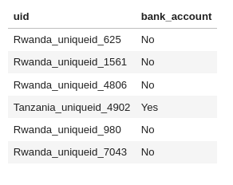
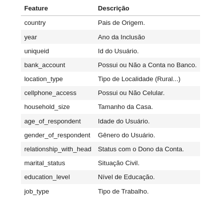
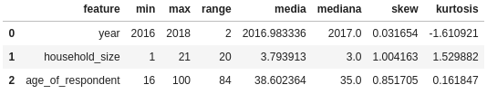
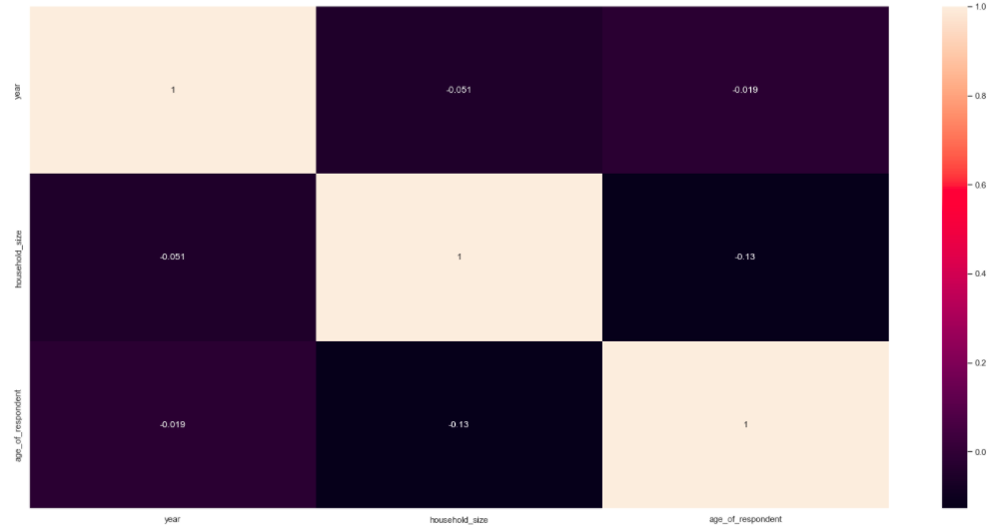
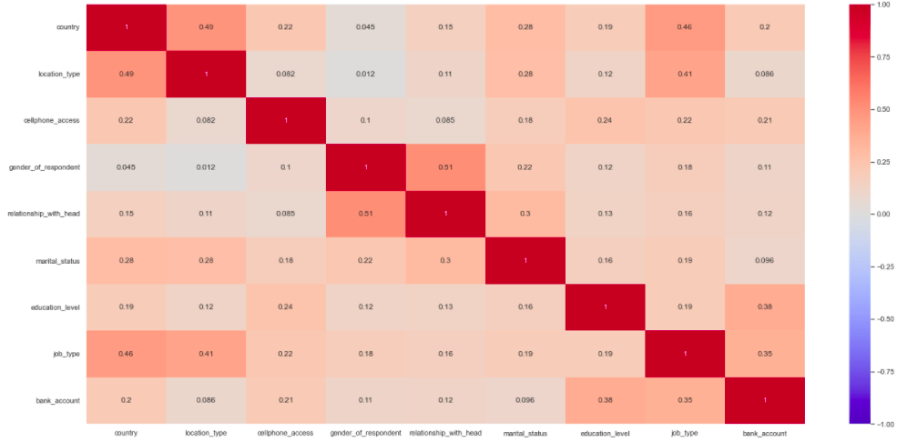
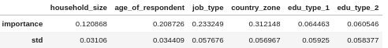
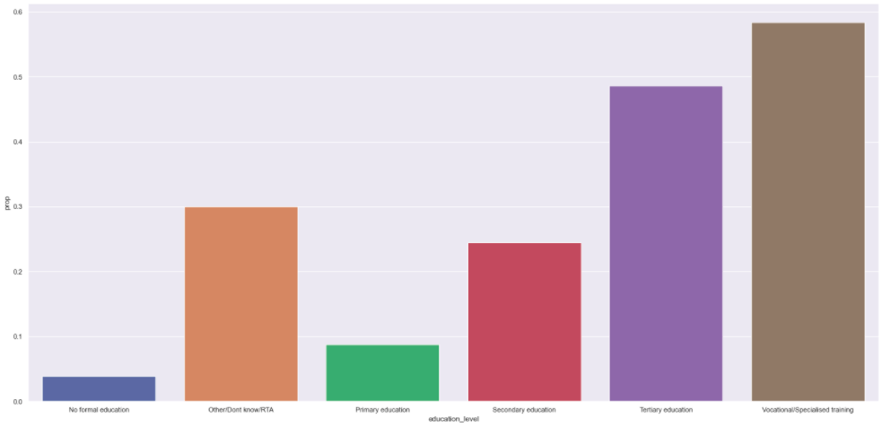

Bank Inclusion - Hackday Comunidade DS
This project aims to predict which user, based in their socio-demographic data, would open a digital bank account.
This project was made by Dados Inglorious Team.
Code
1. Business Problem.
Financial inclusion remains one of the main obstacles to economic and human development in Africa. For example, in Kenya, Rwanda, Tanzania and Uganda, only 9.1 million adults (14% of adults) have access to or use a business bank account.
In 2008, the level of financial inclusion in Sub-Saharan Africa was just over 23%. In 2018, that number almost doubled. In Togo, Mazamesso Assih, finance minister, coordinates a financial inclusion strategy with partner banks. He states that ensuring access to basic financial services for the population is critical to boosting the African economy.
In 2022, as highlighted in the latest report by the Central Bank of West Africa, one of the highest rates of financial inclusion in the region was reached, close to 82%. A significant portion of this increase came from the rise of digital financial services.
Assih also states that there are three main reasons why African nations should focus on financial inclusion:
- Making financial services more accessible promotes the empowerment of the most vulnerable people, especially women.
- Fighting Criminal Networks Moving from an exclusively cash economy to a digital financial infrastructure makes it easier for authorities to track transactions and deal with smugglers and traffickers.
- boost public and private sector connectivity for sustainable growth, supporting African start-ups.
2. Business Assumptions.
We assume that for each user there is a unique id, so users cannot be repeated in the dataset.
Furthermore the output must be in the following format:

3. Solution Strategy
Our strategy to solve this challenge was:
Data Description
- Rename columns
- Check dimensions
- Check types
- Change types
- Check NA values
- Fill in or delete NA values
- Statistical Summary of the features
Feature Engineering
- Hypothesis Map
- Hypothesis creation
Feature Selection
EDA
- Univariated
- Bivariated (hypothesis testing)
- Multivariated (Correlation plots)
Data preparation
Machine Learning modelling
- Classification models
- guideline
Model Avaliation (cross-validation and metrics)
Hyperparameters Fine Tuning
CSV Final
Step 01. Data Description:

- Since the dataset was in a legible previous format and had no NA, this steps is subsummed with statistical description of numeric values.

- No notable discrepancy was found in the statistical summary.
Step 02. Feature Engineering:
- The following hypothesis were uplifted for the problem:
H1. Developed countries has 10 % more digital bank accounts
H2. Urban zone has 50% more digital bank accounts than country-side zone.
H3. 80% of the people with cellphone and internet has digital bank accounts
H4. Quantity of people with undergraduated degree that has digital bank account are greater than the other levels of education.
H5. People between 18 and 40 years old constitute 85% of the basis of digital bank account.
H6. Women are marjority of the digital bank accounts
H7. People older than 60 with cellphone doesnt have digital bank account in general.
H8. 95% of unemployed people doesnt have digital bank account.
H9. 100% of the head-of-the-house has digital bank account.
- We created many features, notably country_zone and country_edu by concatenating the respective features.
Step 03. Data Filtering:
- As we have seen previously in the Data Description, filtering step was not necessary for this dataset.
Step 04. Exploratory Data Analysis:
We proceed with the bivariated EDA for hypothesis testing. We list the main notable insights in the session below.
For the multivariated analysis we divided between numerical and categorical data and plot the correlation matrix (Pearson and V-Kramer correlations).
Numeric attributes (year,household_size and age_of_respondent):

No significant correlation is noted for these 3 features.
Categorical attributes (country,location_type,cellphone_access,gender_of_respondent,relationship_with_head,marital_status,education_level,job_type,bank_account):

- Country has significant correlation with location_type, job_type.
- Location_type has correlation with job_type.
- Relationship_with_head has correlation with gender_of_respondent.
- Correlation was found for education_level and job_type with the target bank_account suggesting that they are sound variables for predicting bank accounts.
Step 05. Data Preparation:
- We do LabelEncoder and FrequencyEncoder for the features.
- We used MinMaxScaler in the features since some algorithms such Logistic Regression requires that the features stay in the same scale.
Step 06. Feature Selection:
- We use the classifier Random Forest to select features by seeing their importance and the standart deviation of the importance.

- From the features create, the feature country_zone had a great importance for the model.
Step 07. Machine Learning Modelling:
Four models were tested for classification: Random Forest, Logistic Regression, K-Nearest Neighbours and Support Vector Machine.
The metric used to quantify the models was F1-Score.
The Support Vector Machine was the most time consuming, since it underperformed in relation to the other models we decided to not go further with it.
Next we performed cross-validation on the models, their F1-Score.
- 'Random Forest': 0.8626057210431016
- 'Logistic Regression': 0.6677682543373659
- 'KNN': 0.8245776464175861
Step 08. Hyperparameter Fine Tunning:
- Since Random Forest was the best scoring model, we decided to go further with it.
- We performed random search of the number of estimators of the forest and the max depth of each tree estimator.
- By setting a limit of tries in the random search and setting a grid of 24 pair of parameters, we have selected by looking at cross-validation F1-scorethe model with 3000 estimators and a tree depth of 9 steps.
Step 09. Convert Model Performance to Business Values:
- Not considered in this challenge.
Step 10. Deploy Modelo to Production:
- There was no such need in this challenge.
4. Top 3 Data Insights
Hypothesis 01: Urban Areas has 50% more digital bank accounts than country-side area
False.
- Its was seen that, for this dataset, the number of bank accounts in Urban and in country-side areas are nearly equal.
Hypothesis 02: People with higher degree of education has the marjority of bank accounts

True
- Its interesting to observe that the number of bank accounts by education level follows a ladder from the uneducated to the most educated except for the last two columns that may be an artifact of having more vocational formation as well.
Hypothesis 03: People between 18 and 40 years old constitute 85% of the digital bank account basis.
False.
- It was found that people between 18 and 40 years old constitute 61% of the basis.
5. Machine Learning Model Applied
- We proceeded with Random Forest.
- The model performance was 0.87 of F1-Score metric (from 0 to 1.0)
7. Business Results
- We dont measured business results
8. Conclusions
9. Lessons Learned
- To hack a Data Science problem in few ours or days in group is a great experience of learning and collaboration worth of training as much as possible.
10. Next Steps to Improve
- See you in the next hackday.
LICENSE
All Rights Reserved - Comunidade DS 2022